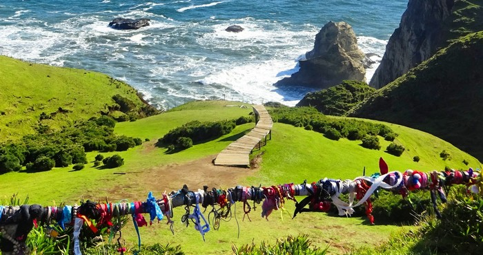

Cochamó o Kocha-mo en lengua Mapuche significa «donde se unen las aguas », una hermosa descripción de este destino cercano al Lago Llanquihue, donde desembocan los ríos Petrohué, Cochamó y Puelo.

Localidad que sirve como punto de partida de atractivas excursiones y paseos, dada la majestuosidad y belleza de los paisajes de la zona. Cuenta con hoteles, restaurantes, zonas para hacer camping y locales de venta de artesanía.

La “ciudad de la música”, debido a que, año a año, aquí se realizan las Semanas Musicales de Frutillar, un hito en el formato clásico nacional. Además, gracias a una donación de la familia Richter, se formó el Museo Colonial Alemán.
Tierra de mitos, leyendas, tradiciones y una gastronomía incomparable. Conocer Chiloé es adentrarse en un mundo mágico de sorprendente riqueza cultural y natural. La identidad de Chiloé te sorprenderá desde que pises la isla grande por primera vez.

La Ensenada es integrante de la Patagónia del sur de Chile, convirtiéndose en una acogedora villa privilegiada en el vértice sureste del Lago Llanquihue, que reúne las condiciones turísticas que muy pocas zonas del mundo poseen, tiene sitios extraordinariamente bellos, se destacan los volcanes Puntiagudo, Osorno y Calbuco especialmente estos dos últimos que se levantan a corta distancia.

Ubicada en la ribera del Lago Llanquihue, Puerto Varas es considerada una de las ciudades más bellas de Chile. Con una clara influencia alemana, cuyos colonos la fundaron a mediados del siglo XIX, desde sus inicios se caracterizó por su enfoque turístico. Hoy ofrece al viajero un hermoso paisaje, buena infraestructura hotelera y gastronómica, un moderno casino de juegos, playa lacustre y, en verano, diversas actividades culturales al aire libre.